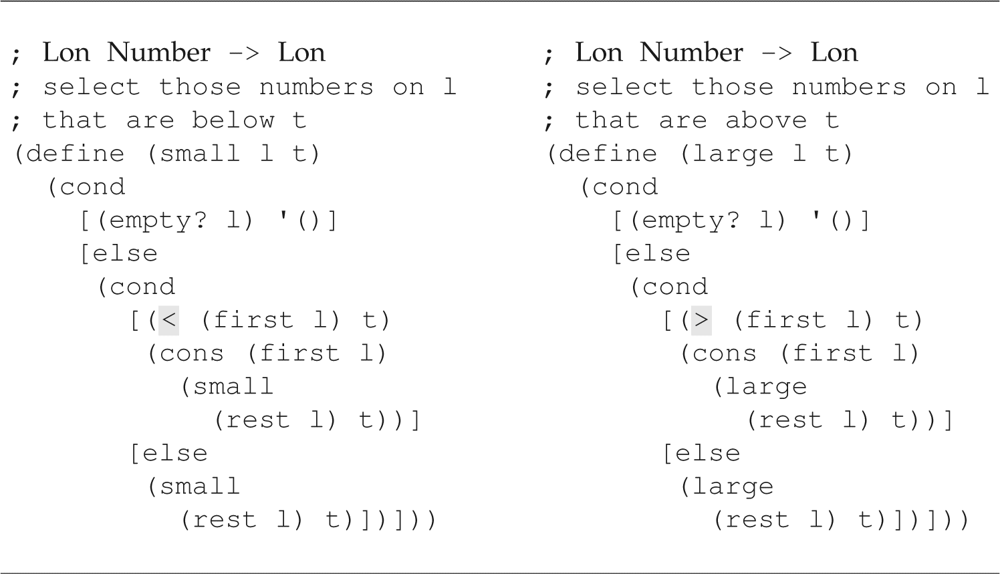
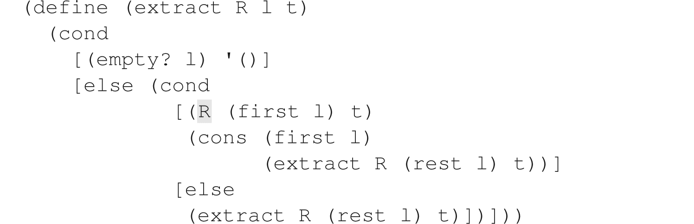
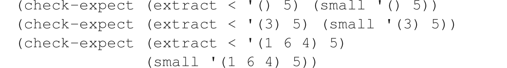
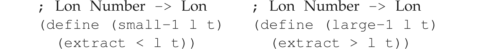
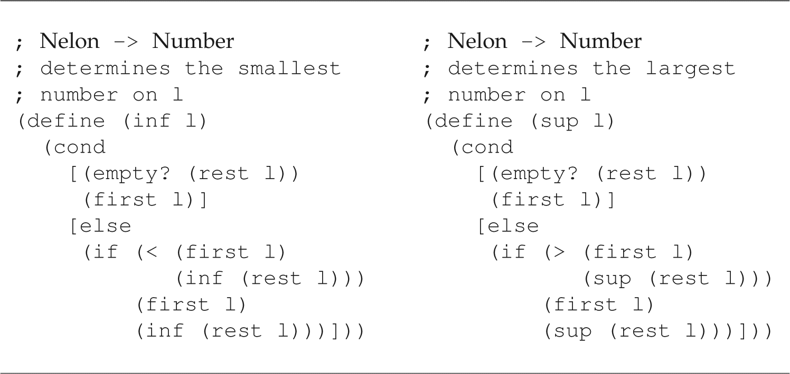
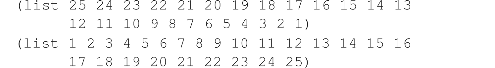

14.2 Different Similarities
Abstraction looks easy in the case of the contains-dog? and contains-cat? functions. It takes only a comparison of two function definitions, a replacement of a literal string with a function parameter, and a quick check that it is easy to define the old functions with the abstract function. This kind of abstraction is so natural that it showed up in the preceding two parts of the book without much ado.
This section illustrates how the very same principle yields a powerful form of abstraction. Take a look at figure 88. Both functions consume a list of numbers and a threshold. The left one produces a list of all those numbers that are below the threshold, while the one on the right produces all those that are above the threshold.

Figure 88: Two more similar functions
The two functions differ in only one place: the comparison operator that determines whether a number from the given list should be a part of the result or not. The function on the left uses <, and the right one >. Other than that, the two functions look identical, not counting the function name.
Let’s follow the first example and abstract over the two functions with an additional parameter. This time the additional parameter represents a comparison operator rather than a string:

To apply this new function, we must supply three arguments: a function R that compares two numbers, a list l of numbers, and a threshold t. The function then extracts all those items i from l for which (R i t) evaluates to #true.
Stop! At this point you should ask whether this definition makes any sense. Without further fuss, we have created a function that consumes a function—something that you probably have not seen before. It turns out, however, that your simple little teaching language ISL supports these kinds of functions, and that defining such functions is one of the most powerful tools of good programmers—even in languages in which function-consuming functions do not seem to be available.
If you have taken a calculus course, you have encountered the differential operator and the indefinite integral. Both of those are functions that consume and produce functions. But we do not assume that you have taken a calculus course.
Testing shows that (extract < l t) computes the same result as (small l t):

Similarly, (extract > l t) produces the same result as (large l t), which means that you can define the two original functions like this:

The important insight is not that small-1 and large-1 are one-line definitions. Once you have an abstract function such as extract, you can put it to good uses elsewhere:
1. (extract = l t): This expression extracts all those numbers in l that are equal to t.
2. (extract <= l t): This one produces the list of numbers in l that are less than or equal to t.
3. (extract >= l t): This last expression computes the list of numbers that are greater than or equal to the threshold.
As a matter of fact, the first argument for extract need not be one of ISL’s pre-defined operations. Instead, you can use any function that consumes two arguments and produces a Boolean. Consider this example:
; Number Number -> Boolean
; is the area of a square with side x larger than c
(define (squared>? x c)
(> (* x x) c))
That is, squared>? checks whether the claim x2 > c holds, and it is usable with extract:
(extract squared>? (list 3 4 5) 10)
This application extracts those numbers in (list 3 4 5) whose square is larger than 10.
Exercise 237. Evaluate (squared>? 3 10) and (squared>? 4 10) in DrRacket. How about (squared>? 5 10)? 
So far you have seen that abstracted function definitions can be more useful than the original functions. For example, contains? is more useful than contains-dog? and contains-cat?, and extract is more useful than small and large. Another important aspect of abstraction is that you now have a single point of control over all these functions. If it turns out that the abstract function contains a mistake, fixing its definition suffices to fix all other definitions. Similarly, if you figure out how to accelerate the computations of the abstract function or how to reduce its energy consumption, then all functions defined in terms of this function are improved without any extra effort. The following exercises indicate how these single-point-of-control improvements work.
These benefits of abstraction are available at all levels of programming: word documents, spreadsheets, small apps, and large industrial projects. Creating abstractions for the latter drives research on programming languages and software engineering.
Exercise 238. Abstract the two functions in figure 89 into a single function. Both consume non-empty lists of numbers (Nelon) and produce a single number. The left one produces the smallest number in the list, and the right one the largest.

Figure 89: Finding the inf and sup in a list of numbers
Define inf-1 and sup-1 in terms of the abstract function. Test them with these two lists:

Why are these functions slow on some of the long lists?
Modify the original functions with the use of max, which picks the larger of two numbers, and min, which picks the smaller one. Then abstract again, define inf-2 and sup-2, and test them with the same inputs again. Why are these versions so much faster?
For another answer to these questions, see chapter 16.2.